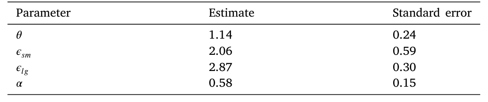
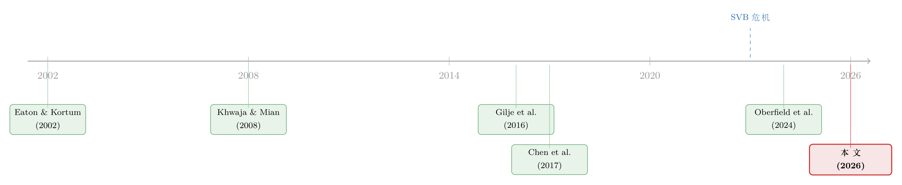

存款往哪儿流，比哪家银行倒下更重要
本文读的是 Maingi (2026, Journal of Financial Economics)：作者把银行的「跨区域放贷网络」塞进一个 Eaton–Kortum 式的量化空间一般均衡模型，再用它去复盘 2023 年的美国地区性银行恐慌。核心结论很反直觉——这场恐慌里，存款并不是无差别地从银行体系里逃走，而是从「放贷机会差」的地区银行流向了「放贷机会好」的地区银行；正是这一层再配置，把本该高达 -1.85% 的总产出收缩，硬生生压到了 -0.2%。换句话说，一场银行恐慌对实体经济的伤害，更多取决于钱流向哪里，而不只是哪家银行被挤兑。
1 引言：一场恐慌，三个被讲烂了和一个被忽略的事实
2023 年 3 月 10 日，硅谷银行（Silicon Valley Bank, SVB）在一场挤兑中倒下；两天后，Signature Bank 也因为大额存款外流被监管者关闭。这两件事拉开了所谓「2023 年地区性银行恐慌（2023 regional bank panic）」的序幕。
围绕这场恐慌，学界和政策圈的讨论几乎都聚焦在两个特别醒目的特征上：其一，大量存款净流出整个银行体系，跑去了货币市场基金和其他资产；其二，存款出现了一次「飞向安全（flight to safety）」——从中型的「地区性（regional）」银行涌向大型的全国性银行。这两条叙事都没错，也都被反复讲过。
但本文作者偏偏盯上了第三个特征，一个重要却被严重低估的特征：地区性银行体系内部，存款发生了一次大规模的再配置（deposit reallocation）。作者的主张相当大胆——这次内部再配置不仅规模可观，而且对于理解这场恐慌的总量真实效应，是一阶（first-order）重要的。
关键在于方向。作者发现，存款是从「边际放贷机会（marginal lending opportunities）差」的地区银行，流向了「边际放贷机会好」的地区银行。一句话：钱离开了那些本来就放不出好贷款的银行，去了那些手里攥着好放贷机会、于是愿意开出更高存款利率来抢钱的银行。
如果这是真的，那它意味着什么？意味着这场恐慌对实体经济的净伤害，会比我们以为的小得多。这正是本文要量化的东西。
2 一个核心：把「钱流向哪里」翻译成「产出少了多少」
整篇论文其实只在反复打磨一个问题：当一笔存款从 A 银行挪到 B 银行，实体经济的总产出会怎么变？
这个问题听起来简单，做起来却极难。因为答案取决于一连串环环相扣的「替代」：A 银行少了存款，会收缩它在所有它放贷的地区的信贷；这些地区的小企业会去找别的银行借钱，但能不能借到、借的成本高不高，取决于当地还有哪些银行、它们离得多近、它们手里有没有富余的放贷能力；而 B 银行多了存款，会扩张信贷，但它扩张的恰恰是它自己覆盖的那些地区——未必和 A 银行重叠。
于是「一笔存款搬家」的总产出后果，根本不是把两家银行的变化简单相加，而是一个一般均衡（general equilibrium）问题：要同时算清楚企业在银行之间的替代、地区之间的贸易、以及工资和价格的重新出清。
要回答这个问题，纯粹的简约式（reduced-form）回归是不够的——你能估出「某地银行受冲击后当地信贷下降多少」，但你估不出「全经济体的总产出净变化」，因为后者要把所有的替代和外溢都加总起来。这就是为什么作者要搭一个结构模型。
3 模型：把银行装进 Eaton–Kortum
模型的骨架来自国际贸易里的经典之作 Eaton and Kortum (2002) 的李嘉图（Ricardian）式跨区域贸易模型。作者在这个骨架上做的最关键的扩展，是让银行贷款成为生产的一种要素。据作者所知，这是第一篇把地区银行的放贷网络嵌进带生产的量化空间一般均衡模型的论文。
3.1 消费者与厂商
经济体由 \(N\) 个地区（"locations" 或 "counties"）构成，下标 \(i,n\)。每个地区里住着一群工人/消费者，他们的效用就是消费，而消费是一篮子品种的 CES（constant elasticity of substitution）加总：
$$ C_{\eta}=\left(\int_0^1 c_{\eta}(\omega)^{\frac{\sigma-1}{\sigma}}\,d\omega\right)^{\frac{\sigma}{\sigma-1}}. $$
每个地区有小企业和大企业两类，\(s,t\in\{sm,lg\}\)。厂商用 Cobb–Douglas 技术生产，劳动 \(l\) 和银行贷款 \(k\) 是两种投入：
$$ y_{is\nu}(\omega)=A_{is}\,z_{is}(\omega)\,l_{is\nu}(\omega)^{1-\alpha}k_{is\nu}(\omega)^{\alpha}. $$
这里有一个不起眼但要命的参数 \(\alpha\)：它衡量的是厂商产出对信贷供给冲击的敏感度。\(\alpha\) 越大，贷款被掐断对产出的打击越狠。后面所有的「总产出收缩多少」，最终都会落到这个 \(\alpha\) 上。
成本最小化给出单位生产成本（marginal cost），其中利率成本指数 \(r_{is}\) 进入分子：
$$ mc_{is}(\omega)=\frac{w_{is}^{1-\alpha}\,r_{is}^{\alpha}}{A_{is}\,z_{is}(\omega)}. $$
接着，厂商的特异生产率 \(z_{is}(\omega)\) 服从形状参数为 \(\Phi>1\) 的 Fréchet 分布，这把模型导向了空间经济学里最熟悉的「引力（gravity）」结构。地区 \(n\) 从市场 \(is\) 进口的份额是：
$$ \frac{q_{nis}}{q_n}=\frac{(p_{nis})^{-\Phi}}{P_n},\qquad P_n^{-\Phi}=\sum_i\sum_s p_{nis}^{-\Phi}. $$
形状参数 \(\Phi\) 越大，生产率分布越「压缩」，贸易流对价格越敏感。直觉上，这一块负责把「某地企业的成本上升」翻译成「它在各地市场份额的丢失」，也就负责把地方性的信贷冲击，沿着贸易网络扩散到整个经济体。
3.2 真正关键的一步：银行的放贷成本怎么依赖存款
到这里都还是标准的空间模型。但真正关键的一步，在于银行。
每家银行 \(j\) 都能向全经济体的企业放贷，但放贷是有成本的——记 \(c_{isj\nu}\) 为银行 \(j\) 给企业 \(is\nu\) 放一美元贷款的成本。大企业进入一个对距离完全不敏感的全国市场，小企业的借贷成本则强烈地依赖地理距离（这正是关系型借贷文献的核心，见 Petersen and Rajan, 1994；Berger and Udell, 1995）。银行在垄断竞争（monopolistic competition）下对每个市场设一个加成（markup），最大化全行利润，同时受到一个总放贷约束：
$$ f_j\!\left(\int_0^1 \mathbf{1}_{j\text{ lends to }is\nu}\,k_{is\nu}\,d\nu\right)_{\forall i,s}\le \ell_j . $$
约束右边的 \(\ell_j\) 就是这家银行的放贷能力，而它被拆成两块：\(\ell_j=d_j+\tilde{\ell}_j\)，其中 \(d_j\) 是存款，\(\tilde{\ell}_j\) 是非存款的放贷能力。
于是整个模型的「枢纽方程」浮出水面——它把银行的存款，和它在每一个市场的有效放贷成本连在了一起：
这个方程为什么是「枢纽」？因为它说明：对一家银行存款基础的任何冲击，会同时影响它所放贷的所有地区——存款的减少不是只伤到「存款是在哪儿吸收来的」那个地区，而是顺着银行的内部资本市场（internal capital markets）传导到它放贷的每一寸地理版图。冲击有多大，取决于这家银行在某地作为放贷者的重要性，以及当地企业能在多大程度上替代到别的银行。这就是把「单笔存款搬家」和「全经济体产出」连起来的那根筋。
模型有一个非常漂亮的性质：给定观测数据和参数，总存在唯一一组基本面（fundamentals）能把数据精确地合理化为模型的均衡。这意味着模型可以精确复制真实世界中每家银行对每个县的小企业放贷模式。代价是——参数因此无法靠简单相关或 OLS 回归来识别（因为模型对任意参数都能拟合数据）。这就逼出了下一节的工具变量。
4 识别：用页岩气井，去撬动远方县城的信贷
既然模型对任意参数都能完美拟合截面数据，那 \(\theta\)、\(\alpha\) 这些新参数到底怎么估？
作者用了工具变量（instrumental variables, IV），灵感来自 Gilje et al. (2016)。思路精巧得令人会心一笑：用页岩气井的开钻（fracking well openings）作为对当地银行存款基础的外生冲击。一个县里突然打出页岩气井，当地居民和企业拿到了开采权使用费和收入，钱存进了在该县早就设有分行的银行——这些银行于是经历了一次显著的存款流入。
但这只是第一步。真正巧妙的是第二步：作者顺着这些被「注资」的银行的内部分行网络，去追踪这笔存款冲击如何被搬运到远方的、和页岩气毫无关系的县城，在那里引起信贷和产出的变化（如表 1 所示）。这一步至关重要——因为它识别的恰恰是枢纽方程里那个「存款影响远方放贷」的传导，也就是 \(\theta\)。

Table 1: study region-level lending and output responses in distant counties
这种做法有一个很大的好处：所有参数都在同一个、内部自洽的自然实验里被识别，估计方程和排他性约束（exclusion restriction）都摆得清清楚楚——页岩气井的位置，被认为与远方县城的信贷需求无关，只通过银行的内部资本市场这一条渠道发挥作用。
这个「追踪银行内部冲击传导」的识别思路，可以一路上溯到 Khwaja and Mian (2008) 用银行流动性冲击追踪企业信贷的经典设计；本文把它从「单家银行—企业」推广到了「银行—跨空间网络」。
外部有效性：拿别人的冲击来检验自己的模型
光估出参数还不够。作者做了一件很硬核的事：用别人论文里的冲击，喂进自己估好的模型，看能不能复制人家的结论。最有说服力的一次，是复制 Chen et al. (2017) 的结果——用「正常时期小银行受到正向冲击」估出来的参数，去预测「金融危机中大银行受到负向冲击」的后果。能跨越这么大的情境差异还对得上，对外部有效性是很强的背书。
5 反事实：1.85% 与 0.2% 之间，隔着一次再配置
参数估好、模型验过，接下来就是把真实的存款流喂进去。
作者从一个「危机前（2022 年 12 月）」的基准经济出发，按 2023 年危机后 6 个月里每家银行实际发生的存款变动去冲击模型，再重新求解均衡，算出总产出相对基准的变化。模型最妙的设计，是允许分步实施这场恐慌，从而把「地区银行作为一个整体的存款净流出」和「地区银行内部的再配置」拆开来看。
于是反转出现了。
作者先算了一个反事实：假设这是一场「按比例（proportional）」的恐慌——所有地区银行（包括那些放贷机会好的）都按比例流失存款。结果是总产出大幅收缩 -1.85%。
然后他喂进真实的、逐家银行的存款流——其中就包含了从「放贷机会差」的银行向「放贷机会好」的银行的再配置。结果呢？总产出只收缩了 -0.2%。
-1.85% 和 -0.2% 之间，隔着的就是这一次内部再配置。没有它，大型全国性银行其实是地区银行的糟糕替代品，会在信贷市场上留下大片填不上的窟窿；有了它，那些吸到存款的地区银行基本补上了潜在的信贷缺口。这就是本文标题「Regional Banks, Aggregate Effects」的全部分量所在。
6 outflow 还是 inflow：是谁在驱动这个好结果？
一个聪明的读者立刻会追问：这个「再配置是好事」的结论，到底是怎么来的？
有两种可能。其一，是因为流出存款的那些银行（比如 SVB）本来放贷机会就特别差，所以钱从它们那儿挪走，几乎怎么挪都是好的——叫它「流出效应（outflow effect）」。作者顺手给了个数字佐证：按模型测算，SVB 的边际放贷机会排在所有银行的第 13 百分位，确实差得很，这和 SVB 管理层自己在 10-K 里承认的「存款增长远超贷款增长、大量过剩存款只能拿去买证券」高度吻合。
其二，是因为流入存款的那些银行，放贷机会高于平均——叫它「流入效应（inflow effect）」。
这个区分极其重要。如果好结果主要来自「流出效应」，那它就高度依赖于「这次恰好是哪几家银行被挤兑」，故事的普适性就很弱；可如果主要来自「流入效应」——即存款被一种基本面的力量（好银行开高利率把钱吸过来）系统性地导向了高效率的银行——那它就刻画了一种超越这场具体恐慌的普遍经济力量。
作者的答案站在了后者这边：超过一半的总再配置效应可以归于流入效应。聚焦这个流入效应，他算出：存款向「放贷机会好」的银行的再配置，抵消了恐慌期间约 60% 的本应为负的总效应——这里的「负效应」甚至已经把流出整个银行体系的净外流也算进去了。
换句话说，存款不是被恐慌随机地、特异地挤来挤去；而是被一种基本面力量，主动地导向了更有效率的银行。作者把这一点上升到了熊彼特（Schumpeter, 1942）「创造性破坏（creative destruction）」的高度：一场银行恐慌的总量后果，不仅取决于哪些银行倒下，更取决于稀缺资源——这里是存款——在多大程度上被再配置到了更高效的银行手里。
7 文献脉络
把这篇论文放回它所在的坐标系，会看到三条线索在它身上交汇。
第一条，是空间经济学（spatial economics）这条主干。 一切始于 Eaton and Kortum (2002) 的李嘉图贸易模型；之后量化空间经济学蔚为大观——Allen and Arkolakis (2014)、Ahlfeldt et al. (2015)、Redding and Rossi-Hansberg (2017)、Monte et al. (2018) 把这套框架打磨得越来越精致。再往后，一支新文献开始往空间模型里嵌入「网络」：Arkolakis et al. (2023) 的空间生产网络、Giroud et al. (2024) 的本地生产率外溢。本文要做的，是把银行网络嵌进去——这一点上，它与 Oberfield et al. (2024b)「Banks in space」这样同期涌现的工作并肩而立。
第二条，是银行融资冲击与实体经济。 从 Kashyap et al. (1993)、Kashyap and Stein (2000) 对存款与放贷互动的研究，到 Drechsler et al. (2017) 的存款渠道，这一支大多不强调空间。而另一支强烈依赖空间变异的文献——Peek and Rosengren (2000)、Chen et al. (2017)、Huber (2018)、以及作者借用的 Gilje et al. (2016)——提供了「空间摩擦对银行（尤其中小银行）确实重要」的大量简约式证据，却少有结构化的工作。本文恰好填在这道缝里。（关于银行放贷渠道在不同地区为何会走向相反，可参见《同样的加息，为什么德国的银行和西班牙的银行走向相反？》。）

第三条，是 2023 恐慌本身的新文献。 大多数工作聚焦在恐慌的「直接冲击对象」上（Jiang et al., 2024；Haddad et al., 2023）；Caglio et al. (2023) 记录了大银行作为「飞向安全」受益者的存款流入，Choi et al. (2023) 刻画了恐慌引发的股价传染。本文的位置很清楚：它越过「直接冲击」，去看地区银行体系内部的再配置，并论证这一层对量化总量效应是一阶重要的。
8 评论与延伸（Q&A + 研究方向）
(a) 几个可能的疑问
Q：「边际放贷机会」到底是个什么东西，会不会是循环论证？
它是一个基于模型、偏均衡（partial equilibrium）、逐家银行的指标，由地区层面的总量和银行的空间放贷足迹算出来——本质上回答的是「再多一美元存款，这家银行能把它放成多有价值的贷款」。它的可信度，恰恰来自它是事前构造的：作者证明这个事前指标能预测银行在 2023 恐慌中实际的放贷反应，并不是用结果去反推机会。
Q：把 SVB 排在第 13 百分位，是不是马后炮？
不完全是。这个排名来自模型对存款—放贷错配的测算，而它和 SVB 管理层在危机爆发前于 2022 年 3 月的 10-K 里的自陈高度一致——「存款增长远超贷款增长，大量过剩存款被迫配置到投资资产」。事前的自我描述和事后的模型排名对得上，这条交叉验证削弱了马后炮的担忧。
Q：为什么储户会突然变得对利率这么敏感？这一步不会很脆弱吗？
这确实是模型外生设定的一环，但作者在在线附录里做了微观基础：当「银行可能倒闭」的恐惧突然袭来，原本「黏性」的储户被「撬松」了，一旦松动，他们就会对存款账户的其他显著特征（比如存款利率）更敏感。有意思的是，作者承认「储户为何被撬松」可能是 2023 恐慌特有的，但「松动之后钱流向高利率/好放贷机会银行」这股力量，大概率是更普遍的。
Q：1.85% 这个反事实，会不会是个被刻意拉高的稻草人？
它确实是反事实，但它是个有纪律的反事实——「所有地区银行按比例流失存款」对应的恰恰是「没有再配置」的世界。它的作用不是预测，而是给「再配置」这件事一个量级标尺：真实世界
-0.2%与这个-1.85%之差，就是再配置的贡献。你可以质疑按比例的具体设定，但稻草人本身的逻辑是干净的。
Q：这个结论依赖大银行是地区银行的「差替代品」，万一不是呢？
这正是模型里小企业借贷「强烈依赖距离」这一设定在起作用——它让大型全国性银行难以无缝接管地区银行留下的小企业信贷缺口。作者把放贷对距离的敏感度交给数据去校准（模型能精确匹配银行对各县的放贷量），所以「替代有多差」不是拍脑袋，而是被关系型借贷文献和实际放贷模式共同钉住的。
Q：把存款再配置说成「创造性破坏」，是不是拔得太高了？
这是个比喻，要小心。作者的意思很具体：稀缺的存款被导向了更高效的银行，从而缓和了总量伤害。但它和熊彼特原意（低效企业被淘汰、资源转向更优用途）确有同构之处。需要警惕的是，这里的「效率」是用边际放贷机会度量的，是一个特定的、模型内的效率概念，未必等同于社会福利意义上的效率。
(b) 几个可能的研究问题与提案
1）把这套框架搬到公司债/信用市场。
【经济故事】本文讲的是银行存款—小企业贷款的空间再配置。一个自然的平移：当某类债券投资者（比如保险公司、债券基金）遭遇赎回冲击，它们抛售的信用债是否也存在「再配置」——资金从「定价机会差」的发行人/承销关系流向「机会好」的？若是，信用利差的总量冲击同样可能被再配置大幅缓和。 【可行性】中。需要 TRACE 交易数据 + 持有人层面的数据（如 eMAXX、NAIC），识别上可借鉴本文「追踪冲击跨空间/跨发行人传导」的思路，但债券市场没有「分行网络」这种干净的内部传导管道，工具变量更难找。
2）外资持有人作为「存款再配置」的反面。
【经济故事】本文的好结果靠的是「资金留在体系内、流向更高效的银行」。如果一部分资金的提供者是外资——他们在危机中倾向于「飞向本国安全资产」而彻底离开——那再配置的缓冲就可能失效。问题是：一国信用市场对外资持有人的依赖度，是否决定了它在融资冲击下的脆弱性？ 【可行性】中高。可用各国国债/信用债的境外持有比例（TIC、ECB SHS）做横截面，识别上可用全球性冲击（如美联储加息）作为共同冲击，比较高/低外资依赖市场的实体反应。与《对着美联储「逆向操作」》的外溢主题相承。
3）流动性的方向感：再配置对市场流动性的含义。
【经济故事】本文强调「钱流向哪里」比「谁被冲击」更重要。在二级市场流动性上是否也成立？做市商/中介的资金从低效场所流向高效场所时，市场整体流动性可能不降反稳。 【可行性】中。需要做市商层面的库存/资金数据（较难获取），识别上可利用监管冲击或资本约束变化。诚实地说，把「资金再配置」从一级信贷搬到二级流动性，机制链条更长，doable 但不容易。
4）再配置缓冲的「政策依赖性」。
【经济故事】2023 年再配置之所以能发生，部分前提是储户被「撬松」后能自由地追逐高利率。存款保险上限、紧急流动性工具（如 BTFP）会不会反而抑制了这种有益的再配置？一个干净的反事实：如果当局更早、更慷慨地兜底所有存款，总产出是更好还是更差？ 【可行性】高。本文的结构模型天然适合做这种反事实政策实验，只需在均衡里改变储户的再配置弹性或银行约束。这几乎是本文模型的一个直接延伸。
5）把「边际放贷机会」做成一个可交易的事前信号。
【经济故事】既然事前的边际放贷机会能预测银行在恐慌中的存款流入，那它是否也能预测银行股的横截面收益？「好放贷机会」的银行在危机中既吸存款又扩信贷，长期价值或被低估。 【可行性】中。需要把本文的模型化指标用公开的银行—县放贷数据（如 CRA、Call Reports）近似复制，再与银行股收益对接。难点在于模型化指标的外部可复制性，但方向清晰。
9 我的判断
这篇论文最大的贡献，是把一个一直停留在「直觉」层面的命题——银行恐慌的总量后果取决于存款流向哪里，而不只是谁被挤兑——变成了一个可量化、可分解、可反事实的结构性陈述。-1.85% 到 -0.2% 的对比，以及「超过一半归于流入效应、再配置抵消约 60% 负效应」的分解，都是干净有力的数字。把银行放贷网络嵌进 Eaton–Kortum 框架本身，也是个会被后人反复借用的方法论贡献。
对识别，我有两点保留。其一，整个 \(\theta\) 的识别压在「页岩气井 → 银行内部网络 → 远方县城信贷」这一条链上，排他性约束（页岩气井位置与远方信贷需求无关）是合理的，但它识别的是正常时期、正向、对小银行的存款冲击的弹性，却要被用来外推危机时期、负向、对各类银行的冲击。作者用复制 Chen et al. (2017) 来回应这个担忧，做得很认真，但「弹性在危机中是否依然线性、依然对称」终究是个无法完全证伪的假设。其二，「储户被撬松」这一关键行为是外生喂进去的；整个「好结果」的链条，其实建立在「储户会理性地追逐高利率/好银行」之上——如果 2023 年的再配置里掺杂了更多噪声、羊群或运气成分，那从中提炼出的「基本面力量」就要打折扣。作者自己也坦承，为何储户被撬松可能是这场恐慌特有的。
后续我最想看到的，是把这套框架对准下一场不一样的恐慌——一场资金提供者更可能彻底离开体系（比如外资撤离、或货币基金虹吸更猛）的情形——去检验「再配置缓冲」到底有多稳健。如果缓冲只在「钱不出体系、只在好银行坏银行间搬家」时成立，那它就是一个幸运的边界条件；如果它在更恶劣的情形里依然成立，那本文揭示的就真是一股普遍的、值得写进教科书的力量。
参考文献
- Eaton, J., Kortum, S. (2002). Technology, Geography, and Trade. Econometrica 70(5), 1741–1779.
- Khwaja, A. I., Mian, A. (2008). Tracing the Impact of Bank Liquidity Shocks: Evidence from an Emerging Market. American Economic Review 98(4), 1413–1442.
- Allen, T., Arkolakis, C. (2014). Trade and the Topography of the Spatial Economy. Quarterly Journal of Economics 129(3), 1085–1140.
- Petersen, M. A., Rajan, R. G. (1994). The Benefits of Lending Relationships: Evidence from Small Business Data. Journal of Finance 49(1), 3–37.
- Gilje, E. P., Loutskina, E., Strahan, P. E. (2016). Exporting Liquidity: Branch Banking and Financial Integration. Journal of Finance 71(3), 1159–1184.
- Chen, B. S., Hanson, S. G., Stein, J. C. (2017). The Decline of Big-Bank Lending to Small Business. (cited in text as Chen et al., 2017).
- Drechsler, I., Savov, A., Schnabl, P. (2017). The Deposits Channel of Monetary Policy. (cited in text).
- Huber, K. (2018). Disentangling the Effects of a Banking Crisis: Evidence from German Firms and Counties. American Economic Review 108(3), 868–898.
- Giroud, X., Lenzu, S., Maingi, Q., Mueller, H. (2024). Propagation and Amplification of Local Productivity Spillovers. Econometrica 92(5), 1589–1619.
- Oberfield, E., Rossi-Hansberg, E., Trachter, N., Wenning, D. (2024). Banks in Space. Working Paper, NBER 32256.
- Jiang, E. X., Matvos, G., Piskorski, T., Seru, A. (2024). Monetary Tightening and US Bank Fragility in 2023: Mark-to-Market Losses and Uninsured Depositor Runs? Journal of Financial Economics 159, 103899.
- Schumpeter, J. A. (1942). Capitalism, Socialism and Democracy. Harper & Brothers, New York.